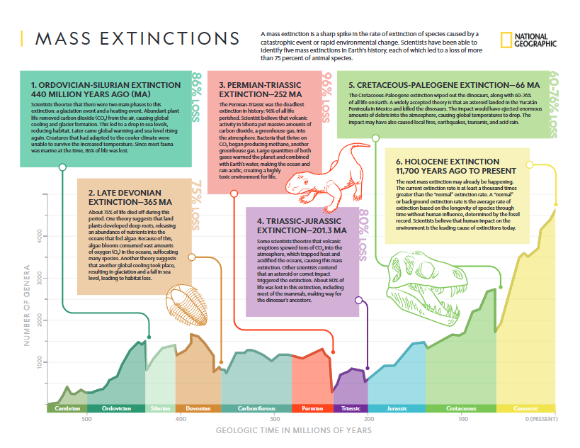

After the Civil War, America was still split into pieces. Tensions between the North and South weren't fully subdued, and racism continued. The Reconstruction shows us how citizenship was both restricted and supported in the years after a war fought against slavery.
Abolishment of slavery was a necessity in supporting citizenship in the United States, putting into law that no person should be treated as property. This allowed people of all color to work jobs for fair pay and to live their lives how they please.
Black men were now able to vote under the constitution, adding to their ability to voice their opinions and have a say in the US government, which is a vital part of being a citizen. With these new rights they could be able to stand up to misdoings and being able to guide the US, supporting citizenship.
But with existing racism and an increasing racial divide, segregation of public spaces was introduced. Fear of sharing a public space with someone who was found grotesque or even unhuman caused this, leading to the restriction of citizenship, as it caused further inequality in the United States and beyond.
And even yet, with black men now able to vote, new laws and groups were set into place to prohibit them from voting. The polling tax stopped low income families, who were often black, from being able to vote. The Ku Kluz Klan threatened and even killing black people and Republicans through murder and lynchings.
For as long as we've been recording, biodiversity has stayed the same, with little jumps every so often. But mass extinction set back the planet's diverse ecosystems and almost reset life.
